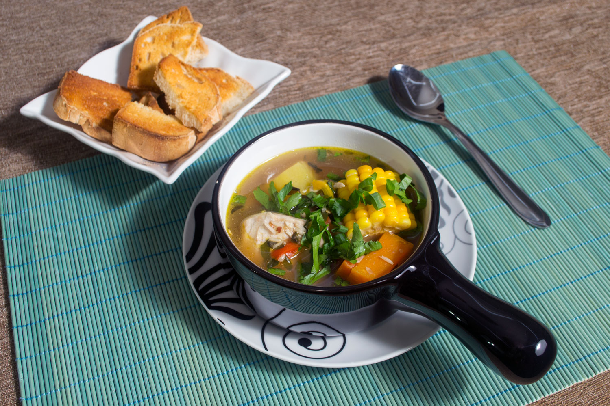
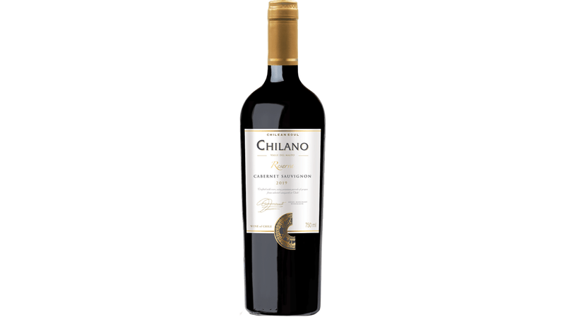
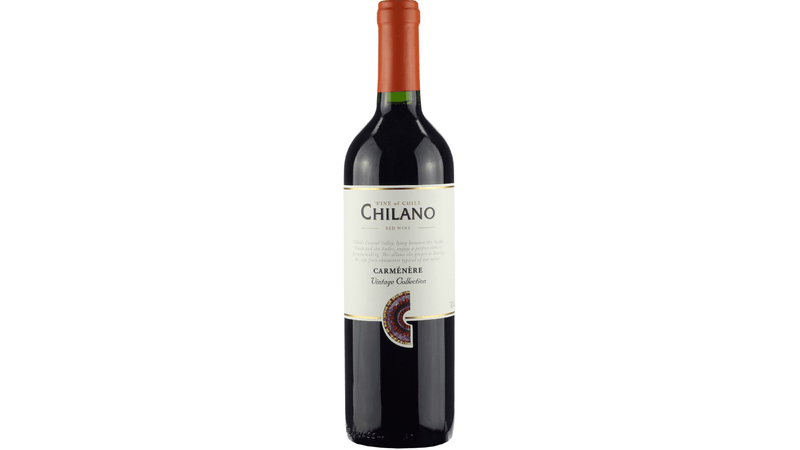
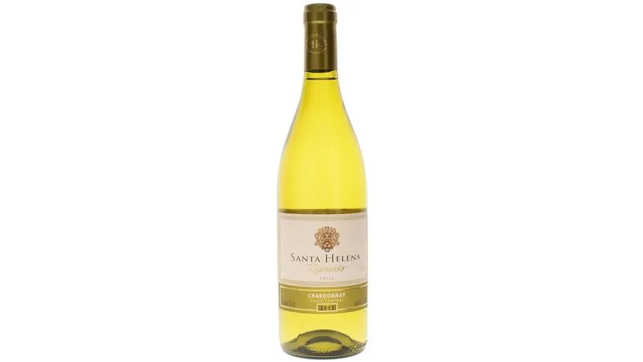

Explorando os Sabores do Chile:
Uma Breve História da Culinária Chilena
Bem-vindo a uma jornada de descoberta pelos deliciosos e diversificados sabores da culinária chilena.
Ao explorarmos a rica história gastronômica do Chile, somos transportados através dos séculos, desde as tradições
ancestrais dos povos indígenas até as influências contemporâneas que moldaram a cozinha deste país fascinante.
A história culinária do Chile tem raízes antigas, ligadas às tradições indígenas dos povos como os Mapuches e os Aymaras.
Eles cultivavam uma diversidade de alimentos, como milho, batatas, quinoa e pimentões, que continuam a ser fundamentais na dieta chilena atual.
Com a chegada dos espanhóis no século XVI, a culinária chilena foi enriquecida com uma variedade de
ingredientes e técnicas trazidas da Europa. Ingredientes como trigo, carne de bovino e porco, além de especiarias e
ervas, foram introduzidos, transformando gradualmente o panorama gastronômico do Chile.
Ao longo dos séculos, a culinária chilena continuou a evoluir, incorporando influências de imigrantes de
diversas partes do mundo, como italianos, alemães e franceses. Essa mistura de tradições culinárias resultou em uma
culinária diversificada e rica em sabores, que reflete a história e a cultura do Chile.
Junte-se a nós nesta jornada de sabores enquanto exploramos os segredos culinários do Chile, desde suas
raízes ancestrais até suas criações contemporâneas.
01 de fevereiro de 2024
Pastel de Choclo
Conheça a história e a receita deste prato típico chileno.
Publicado: 01 de fevereiro de 2024
Descrição:
Para os chilenos, o pastel de choclo é cercado de memórias afetivas, e vai bem num jantarzinho de dia de semana ou até
como prato de festa. A estrutura da receita lembra a do nosso escondidinho, montado em camadas: primeiro o recheio,
de carne moída bem temperadinha com azeitona e ovo; por cima o purê, feito de milho. E acredite: polvilhar o açúcar
antes de levar ao forno faz toda a diferença!
Receitas:
- Receita 1
- Receita 2
- Receita 3
Saiba Mais
22 de junho de 2023
Empanadas
Descubra a história e os sabores das empanadas chilenas.
Publicado: 22 de junho de 2023
Descrição:
As empanadas são um dos pratos mais populares do Chile, e podem ser encontradas em diversas versões,
desde as tradicionais de carne até as mais inusitadas, como as de mariscos. A massa crocante e o recheio
suculento fazem deste salgado uma verdadeira delícia para ser apreciada a qualquer hora do dia.
Receitas:
- Receita 4
- Receita 5
- Receita 6
Saiba Mais

03 de abril de 2022
Cazuela
Conheça a história e os ingredientes deste prato tradicional chileno.
Publicado: 03 de abril de 2022
Descrição:
A cazuela é um prato típico do Chile, feito com carne, legumes e temperos. É uma refeição completa e
reconfortante, perfeita para os dias mais frios. A combinação de sabores e texturas faz deste prato
uma verdadeira delícia para ser apreciada em família.
Receitas:
- Receita 7
- Receita 8
- Receita 9
Saiba Mais
História das Vinícolas Chilenas
As vinícolas chilenas têm uma história rica e fascinante que remonta a séculos atrás. Desde os primeiros vinhedos plantados pelos colonizadores
espanhóis até a moderna indústria do vinho, o Chile desenvolveu uma reputação global como produtor de vinhos de alta qualidade.
Os primeiros vinhedos no Chile foram estabelecidos pelos colonizadores espanhóis no século XVI. As uvas foram trazidas da Europa, e as
condições climáticas e geográficas únicas do Chile logo se revelaram ideais para o cultivo de videiras. No entanto, a verdadeira transformação da
indústria do vinho chilena ocorreu durante o século XIX, quando imigrantes europeus, especialmente da França, trouxeram consigo novas técnicas de cultivo e vinificação.
Um marco importante na história das vinícolas chilenas foi a chegada da praga filoxera na Europa no final do século XIX, que devastou
vinhedos em todo o continente. Como resultado, muitos produtores europeus migraram para o Chile em busca de novas oportunidades. Eles trouxeram consigo
conhecimentos e tradições vitivinícolas que ajudaram a elevar a qualidade dos vinhos chilenos.
No século XX, a indústria do vinho chilena continuou a crescer e se modernizar. Vinícolas familiares foram gradualmente substituídas por
grandes empresas e cooperativas, e novas técnicas de vinificação foram introduzidas para melhorar a qualidade e a consistência dos vinhos.
Hoje, o Chile é reconhecido como um dos principais produtores de vinhos do mundo, conhecido por seus vinhos tintos encorpados,
como o Carménère, e seus vinhos brancos refrescantes, como o Sauvignon Blanc. As vinícolas chilenas continuam a inovar e a conquistar prêmios
internacionais, mantendo viva uma tradição vitivinícola que remonta a séculos.
Harmonização de Vinho e Comida
A combinação de vinho e comida desempenha um papel crucial na cultura gastronômica chilena, criando experiências sensoriais memoráveis que celebram os sabores locais e os vinhos produzidos nas diversas regiões do país.
Confira algumas sugestões de harmonização para explorar a riqueza e diversidade da culinária chilena:
Vinhos Tintos
-
Cabernet Sauvignon:
Este vinho encorpado e robusto combina bem com carnes vermelhas grelhadas, como o famoso churrasco chileno conhecido como "asado",
além de pratos de cordeiro e empanadas de carne.

-
Carménère:
Um vinho emblemático do Chile, o Carménère complementa pratos condimentados e picantes, como o Pastel de Choclo e o Porotos Granados.

Vinhos Brancos
-
Sauvignon Blanc:
Fresco e frutado, o Sauvignon Blanc é perfeito para acompanhar frutos do mar frescos, ceviches e saladas de frutas tropicais.

-
Chardonnay:
Este vinho encorpado e com notas de frutas tropicais harmoniza bem com pratos de frango grelhado, peixes grelhados e risotos cremosos.

Além disso, não deixe de experimentar as deliciosas sobremesas chilenas, como o Alfajor e o Tres Leches, acompanhadas de um vinho Late Harvest ou um Moscatel.